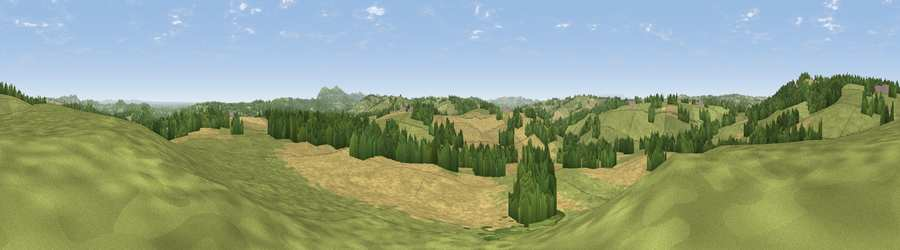

Viewpoint near Bromyard
#19663 in England · top 52% of its area beats it · near BromyardWhere it is
The exact computed spot (SO 68625 53325). Click the marker for map links.
The view, rendered

A 360° render of this exact spot computed from the terrain model, tree cover and land cover — summer colours, afternoon light, calibrated against photographs of famous viewpoints. Real trees, hedges and buildings will differ in detail.
The panorama
Grey silhouette: terrain skyline in each direction (720 bearings, Earth curvature and refraction included). Dashed green: skyline with trees (+15 m) and buildings (+8 m) as obstacles. Blue strip: how far the ground is visible on each bearing.
Where the view opens
Wedge length = distance to the farthest visible ground on that bearing (vegetation-aware). Rings at 10, 25 and 50 km.
What fills the view
47% grassland · 35% cropland · 18% woodland ·
Angular shares of the visible panorama (visual magnitude), not map area. Landscape diversity 0.46 (0–1 Shannon).
Key numbers
More beautiful places nearby
The staircase of upgrades: each row has a higher view potential than everything closer. Driving times are estimates from straight-line distance, calibrated against real road routing — check an actual route before setting out.
| Place | Direction | Drive | Score |
|---|---|---|---|
| Viewpoint near Bromyard | NW · 2 km | ~6 min | 72.9 |
| Viewpoint near Storridge | ESE · 7 km | ~14 min | 73.5 |
| Viewpoint near Martley | NE · 8 km | ~16 min | 78.1 |
| Viewpoint near West Malvern | SE · 10 km | ~20 min | 81.4 |
| North Hill | SE · 11 km | ~21 min | 86.8 |
| Worcestershire Beacon | SE · 12 km | ~22 min | 87.1 |
| Viewpoint near West Quantoxhead | SSW · 124 km | ~148 min | 87.9 |
| Viewpoint near West Quantoxhead | SSW · 125 km | ~149 min | 88.7 |
52.17728, -2.46024 · source: screening · position refined by local search. Computed location — check access rights before visiting.